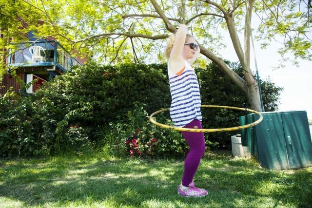
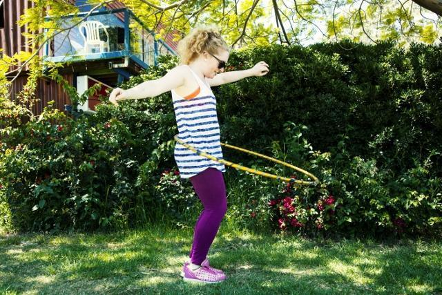
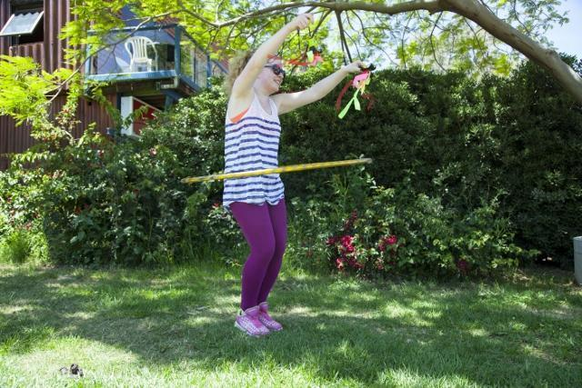

מהודו לפארק הירקון
במסגרת צעדיי הראשונים בעולם העיתונות החוקרת, החלטתי שאני חבה לכן, אחיות יקרות, לצאת לשטח ולהביא את האמת. ומהו המכנה המשותף הבסיסי ביותר של כולנו? לא, לא החיבה לאייליינר. גם לא לנעליים ולא לבצקים. אלה ההורמונים! הטבע.
יצאתי, במלוא הגבורה (צריכה לקבל כל רגע), לשטחי האש המסוכנים — פארק הירקון — לסשן התנסות בתחבושות Always Ultra Twist & Flex, תוך כדי ביצוע הספורט החביב עליי. להלן הממצאים.
עמק פרווטי, הודו, ראש השנה 2009. מסיבת הטבע הראשונה שלי. אני צועדת מוקסמת למרגלות הכפר. המבט שלי נע בין מפת הכוכבים הנוצצת, האוויר הקר והצלול וריחות הטבע והמדורות. לפתע, בזווית העין, נגלה מחזה מהפנט: שני כדורי אש נישאים מעלה במחול שלא ראיתי כמותו. ספורט שהוא ריקוד שהוא ציור.
המחזה משך אותי כמו פרפר. האישה שמולי החזיקה שני חוטים, ובקצה כל אחד מהם רקד כדור אש. היא ניצחה עליהם כמו קוסמת, בתנועה מעגלית ומדויקת. אחרי שהתבוננתי זמן רב, הבנתי שחדוות התנועה והחיבור שלה לגוף פשוט שבו אותי. „מה זה?” הצלחתי לשאול. „פוי”, ענו לי. נשבעתי שעד סוף הטיול אלמד לעשות את זה — אולי לא מיד עם אש, אבל אלמד. נשבעתי וקיימתי.
כשחזרתי לארץ גיליתי שהפוי הוא ענף באמנויות הקרקס. אחר כך הגיע גם החישוק, ששבה אותי בקסמו וביכולת שלו לתעל אנרגיה. אני לא סופר־ספורטיבית, אבל אני אוהבת לרקוד; פחות מתחברת לאווירת הפלורסנטים של חדר הכושר. פעילות עם אלמנט מדיטטיבי, שנותנת הפוגה מהלחץ היומיומי ואפשר לעשות כמעט בכל זמן ומקום, מתאימה לי הרבה יותר.
החששות שלפני האימון
אני מודה: בדרך כלל אין סיכוי שאצא לאימון כשאני יודעת שהמחזור עומד להגיע. ומניסיון העבר, אני לא מתה על תחבושות בגלל העכבות שנלוות אליהן — הפחד שהן יזוזו, שהזרימה תעלה על יכולת הספיגה, שלא יהיה נוח, או שמישהי (ואולי, גרוע יותר, מישהו) יבחינו בצורה שלהן מתחת לטייץ.
עכבות הן בדיוק ההפך מהעיקרון החשוב ביותר בספורט שלי: שחרור. כדי להצליח עם החישוק, צריך לנתק את המחשבות, להתחבר לגוף ולתת לדברים לקרות מעצמם. אפשר להבין למה גם מאמינה גדולה ואופטימית כמוני הגיעה ליום ההתנסות עם מידה מסוימת של ספקנות.
מבחן השטח: ריצה, חישוק ותנועה
אולווייז אולטרה טוויסט אנד פלקס מגיעות בשלוש רמות ספיגה, שנבדלות גם באורך בכמה מילימטרים. שלושתן קטנות, דקות וגמישות. קימצ׳צ׳תי אותן היטב — בשיטה שאמא שלי לימדה אותי לבדוק אם בגד חדש יצטרך גיהוץ או לא. לאמא הקוראת: השיטה שימושית בעוד תחומי חיים. תודה.
התחלתי בחימום שגרתי של 20–30 דקות, שכלל יוגה וצ׳יקונג, והמשכתי בהליכה מהירה ובריצה קלה לאורך כארבעה קילומטרים. הריצה עברה חלק. לא הרגשתי את תחושת ה״חיתול״ שאני מכירה מתחבושות רגילות, ולא הרגשתי שיש שם משהו. התחבושת לא זזה, וזה שימח אותי מאוד — אין דבר מעצבן יותר מלסדר אותה בפומבי ולקוות שאף אחד לא רואה.

כשהגעתי לחישוק כבר הייתי מחוממת היטב, והגיע המבחן האמיתי. ידעתי שהמחזור התחיל. העבודה עם החישוק כוללת הרמת רגל, סיבובים ותנועות חדות, והרבה תנועה של האגן. בהתחלה זזתי בזהירות: אני לא רגילה להתאמן עם תחבושת ולא ידעתי למה לצפות. אבל ככל שניסיתי להתרכז בתחושה, הבנתי שאין שום דבר שמפריע לי או מעכב אותי.
פייר? לא יצא לי להיתקל בתחבושת היגיינית גמישה כל כך, שפשוט זזה איתך באשר תלכי. וכשאני נכנסת לזה, אני זזה. סיימתי את האימון בתחושת ניצחון והערכה לטכנולוגיה שהביאה אותנו עד הלום. אפילו את ההרפיה בסוף האימון עשיתי בביטחון מלא. תרגילים כמו עמידת נר, שלא הייתי חושבת שאעשה באמצע הפארק בטייץ צמוד בזמן המחזור, פשוט זרמו מעצמם.

חזרתי הביתה רק אחרי כמה שעות, וגיליתי שיכולתי להמשיך עוד, אילו לא הייתה ברירה. מרכז הספיגה נמצא באמצע, והתחבושת סופגת פנימה. בהתנסות שלי, יכולת הספיגה הייתה טובה והגמישות שלה עזרה לה להישאר במקום לאורך התנועה.

אז מה למדתי בשטח?
בין אם אתן משתמשות בתחבושות על בסיס קבוע ובין אם אתן נעזרות בהן בימים שלפני המחזור ואחריו — אני ממליצה גם לחששניות ביותר לצאת וליהנות מהפעילויות שמרטיטות את לבכן ומרגשות את גופכן, עם המוצר הזה. בהחלט שווה ניסיון.
שטח אש? יותר שטח של שחרור.